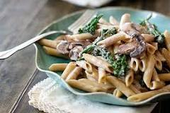
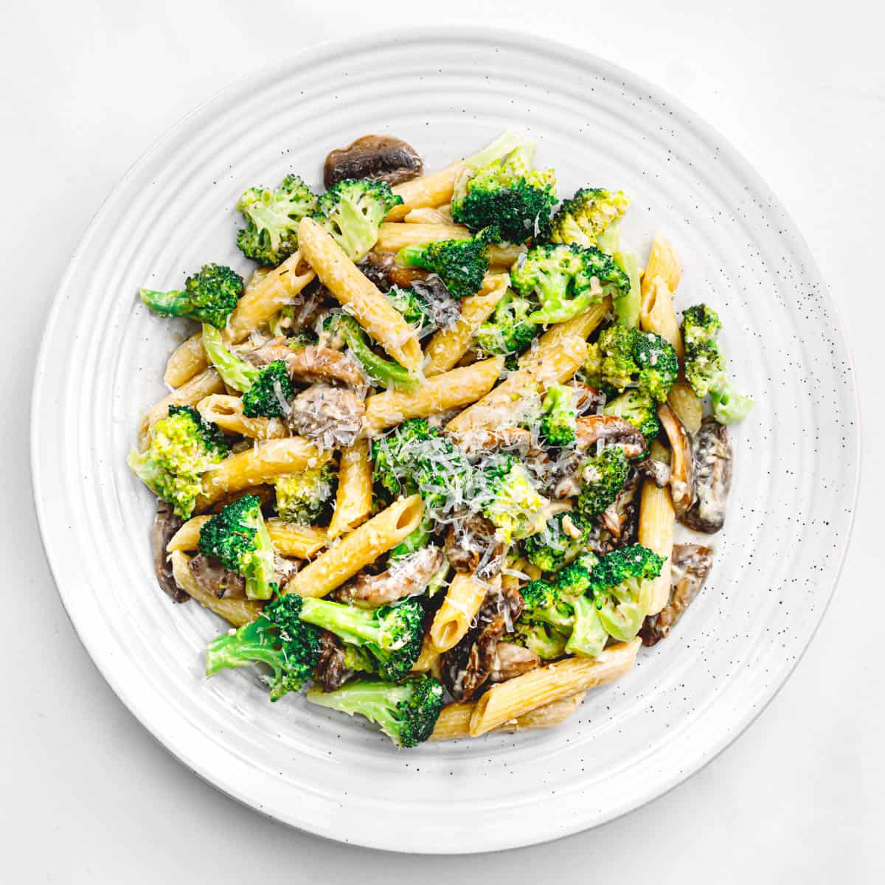
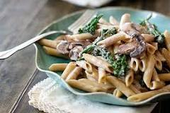
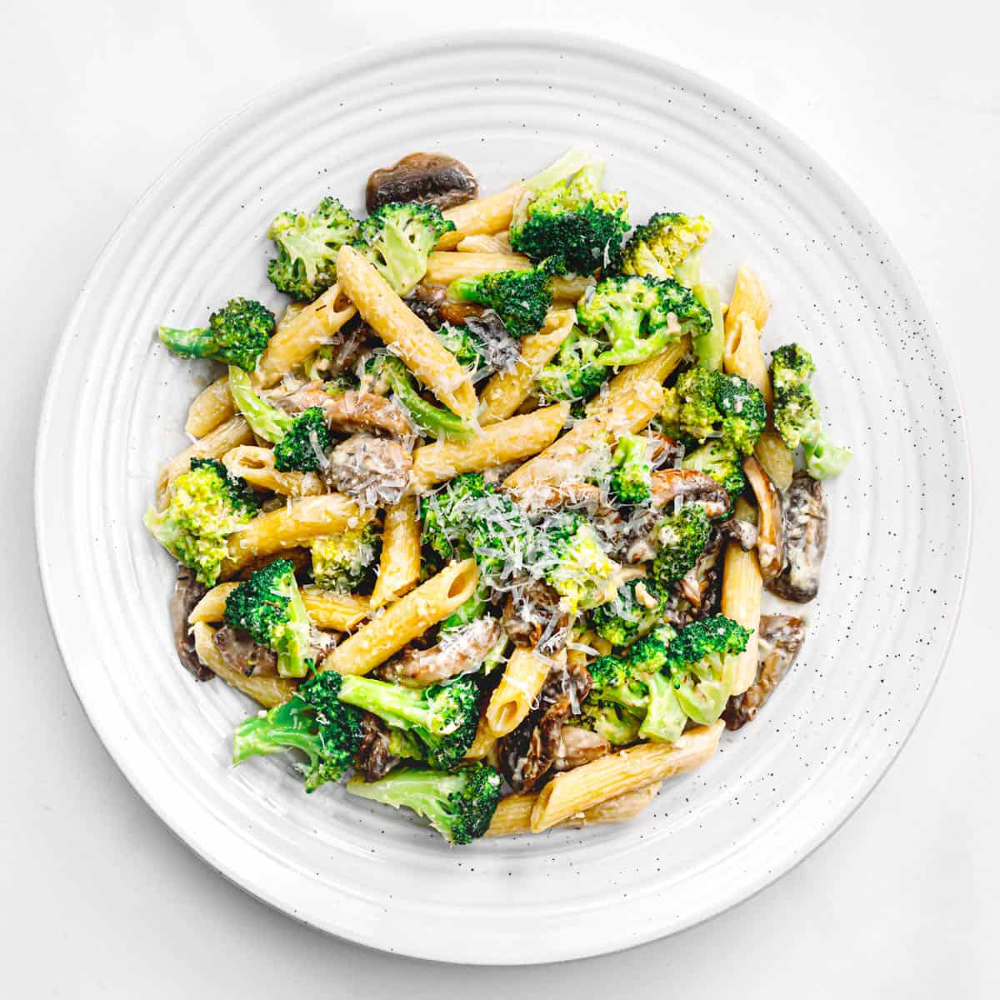

Pasta Alfredo with mushroom and broccoli
 



This recipe for Mushroom Alfredo features a lightened up flavorful Alfredo sauce with balsamic sautéed mushrooms and tender broccoli florets.
Pasta Alfredo with Mushrooms and and Broccoli is a delicious meatless meal if you’re a vegetarian, or maybe you’re looking for a great recipe for Meatless Monday. You’ll love how easy this pasta Alfredo recipe is to make!
Tools to Make this Mushroom Alfredo Pasta Recipe
You’ll need a few different tools to prepare this mushroom lovers pasta. Here’s what I recommend having on hand before beginning this recipe:
- Sharp Knife and Cutting Board – to cut the mushrooms and broccoli.
- Measuring Cups and Spoons – to measure the ingredients for the mushroom alfredo sauce.
- Large Sauté Pan – to sauté the mushrooms in and prepare the alfredo pasta sauce.
- Large Pot – to cook the fettuccine pasta in.
- Colander – to drain the cooked pasta
- Wooden Spoon – to stir the pasta in the boiling water and to stir the alfredo sauce.
- Wire Whisk – for whisking the parmesan into the cream mixture.
- 10 ounces Cremini or Baby Bella Mushrooms, sliced
- 1 tablespoon Balsamic Vinegar
- 1 tablespoon Extra-Virgin Olive Oil
- 2 - 3 cups, approximately, Broccoli Florets
- 1 2/3 c Half and Half
- 6 1/2 tablespoons Heavy Cream
- 6 tablespoons Butter
- 1 lb. Pasta (we love Fresh Fettuccini Noodles)
- 1 1/4 cup (2.5 oz.) fresh grated Parmesan
- 1/4 teaspoon Fresh Ground Black Pepper, or to taste
- 1/4 teaspoon Sea Salt, or to taste
- Pinch of Ground Nutmeg
- In a large sauté pan, heat olive oil for sautéing, about a tablespoon.
- Add the mushrooms, balsamic vinegar, and salt and pepper to taste (if desired)
- Sauté until mushrooms are tender, have released their liquids and absorbed the vinegar.
- Remove from the pan and set aside on a plate.
- In a large stock pot, add 4 quarts of water and a tablespoon of sea salt. Bring to a boil.
- Once the water is boiling, add the pasta, stirring to separate so it doesn't stick together, and cook to just under al dente (about 1 minute less according to package instructions).
- Add the broccoli to the boiling water during the last 2 minutes of the pasta’s cooking time.
- Drain cooked pasta and broccoli and set aside.
- Combine 1 1/2 c of the half and half, butter, nutmeg, salt, and pepper in a sauté pan large enough to accommodate the cooked pasta (or the same one used for the mushrooms if large enough, giving it a quick rinse out first).
- Heat the butter mixture over low until the butter is melted and the half and half is barely simmering. Stir periodically so the butter combines with the half and half as it melts.
- Drain cooked pasta and broccoli and add it to the sauté pan.
- Add the heavy cream, Parmesan cheese, and mushrooms.
- Cook on low heat, tossing to combine the ingredients, until sauce is slightly thick, 2-3 minutes. Taste for seasonings, adding additional salt and pepper, if desired.
- Serve immediately in heated pasta bowls.